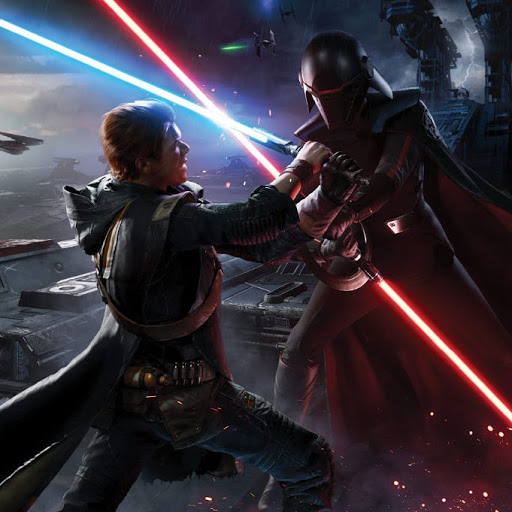

Plot
Five years after the execuion of Order 66 and the beginning of the Jedi purge. Star Wars Jedi Fallen Order is about a boy named Cal who is one of the last jedi. He works for a cleanup crew that cleans up from the Clone Wars on the planet Bracca. He has been found by the two Empire Inquisitors, known as the second sisters. She kills Cals friend Prauf, Cal makes his escape where he meets a Jedi knight named Cere Junda and her partner Greez Dritus in their ship, the Stinger Mantis. Cere takes Cal to the planet Bogano, hoping he will open the secret vault. On the way he meets a new friend/Droid BD-1 who shows a message from a former Jedi Knight Eno Cordova that talks about the ancient civilization Zeffo and a list of children that are strong with the force.